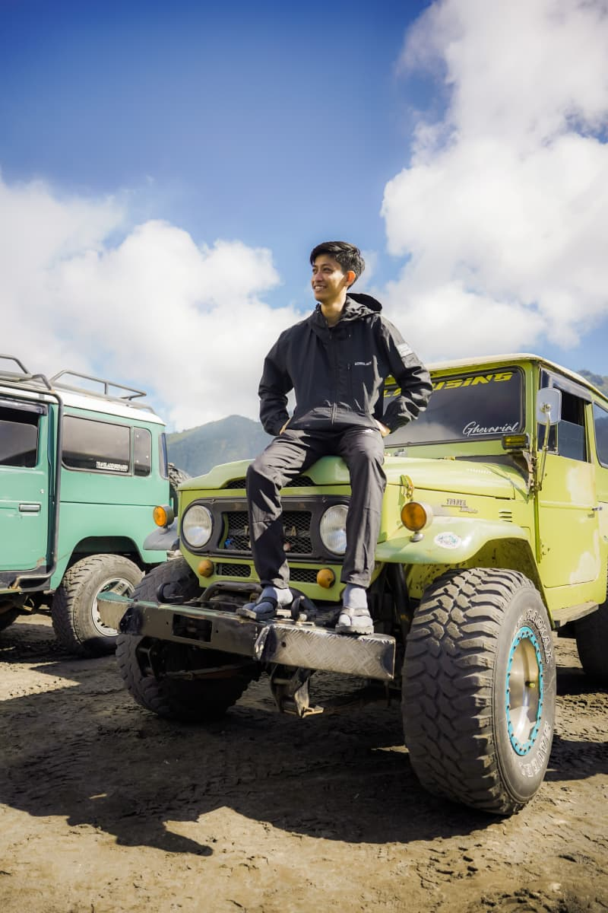
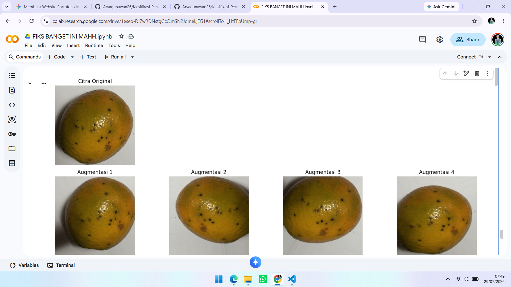
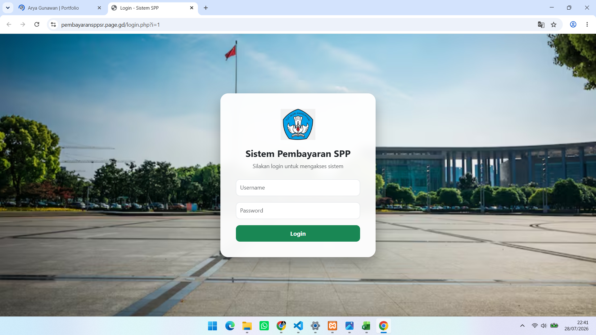
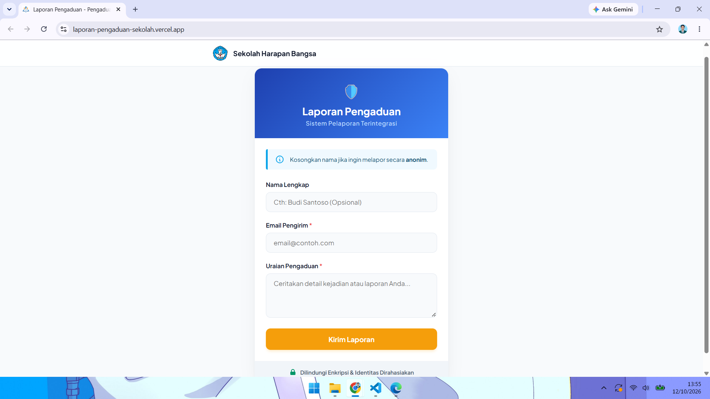
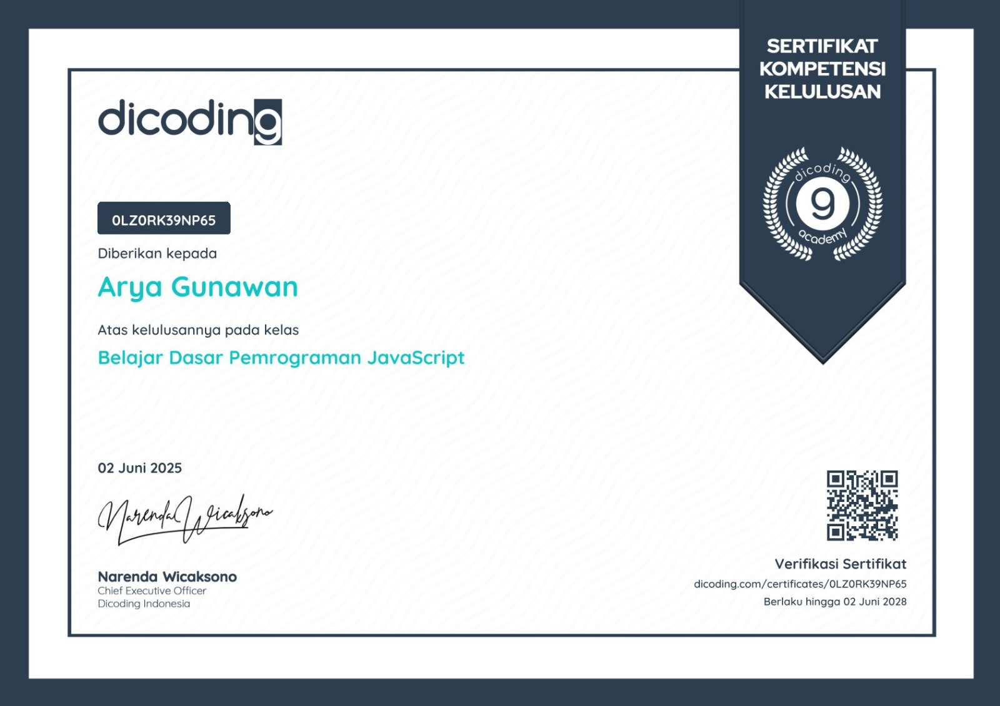
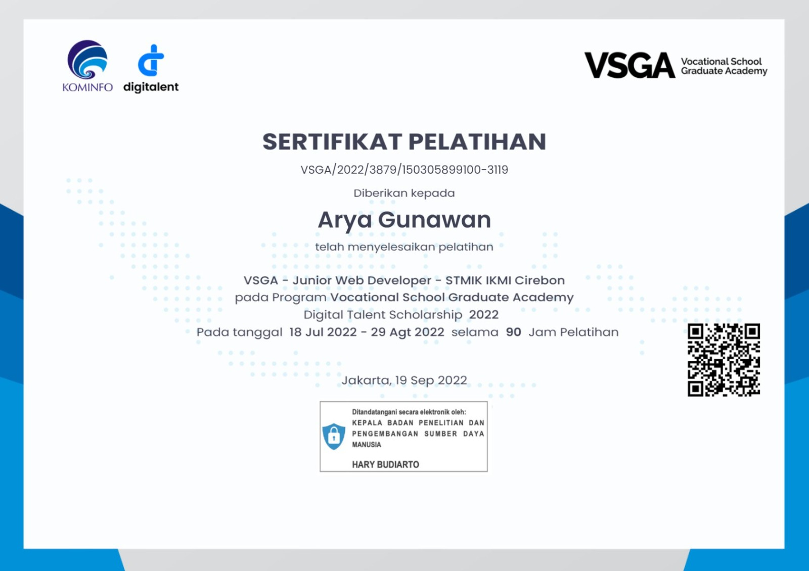
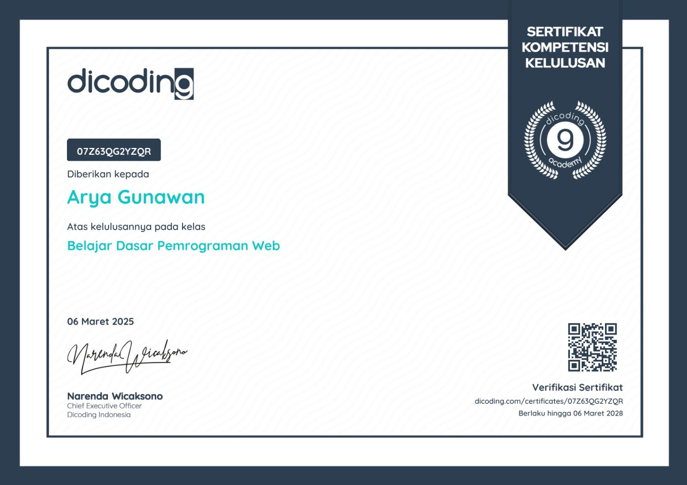

Saya berdedikasi untuk menciptakan solusi teknologi yang inovatif, dengan keahlian di bidang pengembangan web, analisis data, dan dukungan IT.

Nama: Arya Gunawan
Domisili: Cirebon, Jawa Barat
Pendidikan: STMIK IKMI Cirebon
Email: aryagunawan605@gmail.com
Hobi: Bersepeda, Coding, Mini Soccer, Mendaki
Lulusan Teknik Informatika STMIK IKMI Cirebon dengan pengalaman 2 tahun sebagai Staff Tata Usaha. Memiliki kompetensi dalam administrasi, pengelolaan data, Microsoft Office, UI/ UX Design, dan pengembangan web. Berpengalaman memimpin organisasi sebagai Presiden Mahasiswa serta mengikuti Program Pertukaran Mahasiswa Merdeka Batch 4 sebagai Wakil Kepala Suku. Memiliki kemampuan komunikasi, kepemimpinan, kerja sama tim, dan problem solving yang baik.
Tahun Pengalaman
Project Selesai
Sertifikat
Jam Belajar
Jul 2024 - Jul 2026
Mengelola administrasi digital lebih dari 100 siswa menggunakan Microsoft Excel, menyusun laporan, serta mendukung digitalisasi administrasi sekolah.
Feb 2024 - Jul 2024
Menjadi penghubung komunikasi antara peserta, koordinator, dan tim pelaksana. Menginisiasi lomba antar kelompok dan mengembangkan program podcast mahasiswa.
Mar 2023 - Feb 2024
Memimpin lebih dari 30 pengurus, mengoordinasikan 10 program kerja unggulan, dan mengelola kegiatan kemahasiswaan termasuk PKKMB dengan 350+ mahasiswa baru.
Des 2023 - Mei 2026
Mendukung edukasi pencegahan kekerasan seksual di kampus dan terlibat dalam penyelenggaraan seminar bersama LLDIKTI Wilayah IV.
Lulus sebagai Sarjana Teknik Informatika
"Menyelesaikan pendidikan Sarjana Teknik Informatika dengan fokus pada pengembangan perangkat lunak, manajemen basis data, pengembangan web, dan penerapan kecerdasan buatan. Selama masa studi aktif mengikuti berbagai organisasi, pelatihan, dan proyek teknologi untuk mengembangkan kemampuan teknis maupun kepemimpinan."

Membangun model Deep Learning untuk mengklasifikasi penyakit pada daun jeruk dengan menerapkan teknik sampling guna mengatasi masalah ketidakseimbangan dataset (imbalanced data).

Aplikasi berbasis web untuk mengelola, mencatat, dan merekap data pembayaran SPP secara efisien.

Aplikasi web interaktif untuk memfasilitasi laporan atau pengaduan secara anonim dengan integrasi pengiriman notifikasi otomatis.

Dicoding Indonesia (2025)

VSGA Digital Talent Scholarship (2022)

Dicoding Indonesia (2025)
Saya terbuka untuk peluang kerja, proyek freelance, atau sekadar diskusi teknologi.